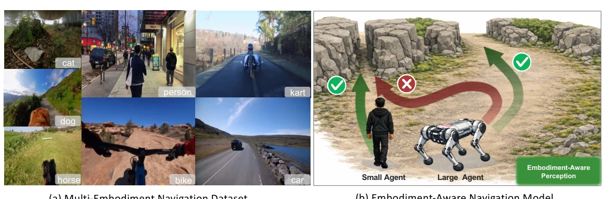
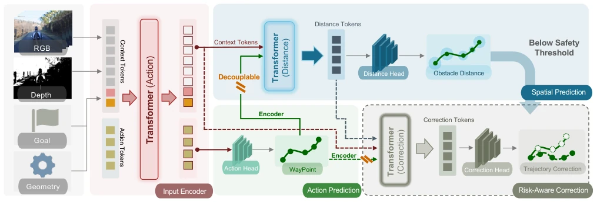
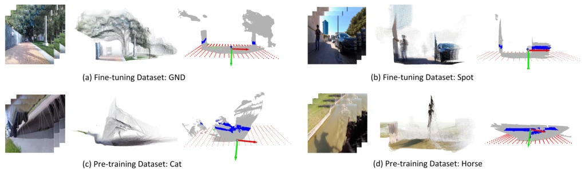
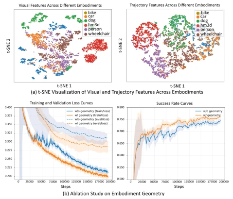
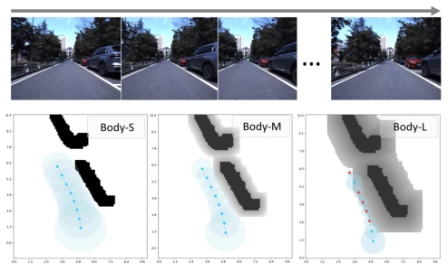
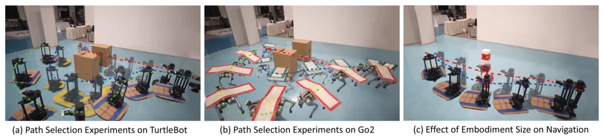
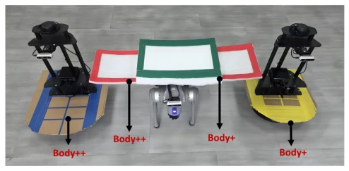
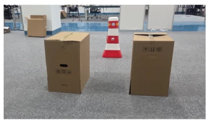

This paper finally takes the "robot body" issue seriously. Previous navigation models were like blind men touching an elephant, looking only at images without considering the body, leading to cats and cars performing identical actions at the same intersection, which is unscientific. EA-Nav uses internet video for pre-training, followed by fine-tuning, attempting to enable the model to learn "tailor-made" solutions. Although not all motion constraints (e.g., turning radius) are solved, explicitly injecting geometric information into the policy network is indeed more reliable than pure vision. However, relying on pseudo-labels like Depth-Anything-3, the geometric accuracy in the real world remains questionable, as internet videos are not real robot data, and the sim-to-real gap still exists.
The core pain point of embodied navigation is "same scene, different behavior". Existing methods mostly rely on pure vision [3, 9] or reinforcement learning [6, 8]; the former ignores physical form leading to action ambiguity, while the latter has low sample efficiency and is difficult to transfer. Although imitation learning is beneficial, existing work such as ExAug [12] relies on discrete waypoints, cannot capture collision risks in continuous space, and is difficult to adapt to robots of different sizes. This paper aims to solve the lack of geometric perception in cross-embodied navigation, enabling the model to judge "whether it can pass" based on body size, rather than blind prediction, filling the gap in embodied information modeling under the IL framework.

Figure 1: Overview of our contributions. (a) We collect large-scale first-person videos from the Internet across diverse embod- iments (e.g., humans, animals, and vehicles), and build a cross-embodiment navigation dataset through annotation. (b) We introduce an embodiment-geometry modality injection mechanism, allowing the navigation model to predict safe trajectories conditioned on embodiment geometry.
The framework is divided into two stages. Pre-training uses internet videos, injecting embodied geometry (length, width, height, maximum pass height) as condition tokens to solve action ambiguity. The fine-tuning stage adopts a decoupled architecture: Action Prediction predicts actions, Spatial Perception evaluates risk distance, Risk-Aware Correction corrects trajectories. The innovation lies in designing a risk trajectory augmentation strategy, generating high-risk samples by inflating occupancy grids, compensating for the scarcity of collision samples in real data. The spatial perception module allows updating shared context features, ensuring geometric information is fully utilized, rather than merely as input. This design avoids the problem where downstream module features are dominated by the main task in parallel architectures, improving the accuracy of risk perception. Additionally, the correction module predicts global yaw angle rather than incremental actions, reducing prediction difficulty, and supports the selection of multiple feasible directions, enhancing the robustness of the policy.

Figure 2: Overview of the EA-Nav framework. The Input Encoder jointly encodes visual observations, the goal, and embodiment parameters. Action Prediction predicts the action sequence from the fused features. Spatial Perception uses embodiment-aware context and action features to identify high-risk waypoints, while Risk-Aware Correction further refines risky trajectories.

Figure 3: Visualization of environment modeling. The red planar region represents the estimated ground obtained via plane fitting, and the blue regions indicate detected obstacles. The input is an image sequence of length 8.
Tested on i2Nav and real robots (TurtleBot, Unitree Go2). Compared with NavDP [3], ExAug [12], etc. Metrics include SR, CR, TPR, etc. Results show that after introducing embodied geometry, the navigation success rate of robots of different sizes (Body-S to Body-L) significantly improved, especially in complex scenes (Scene2/3). Ablation experiments prove the risk augmentation strategy improves the high-risk identification rate by about 5 times. In real experiments, small robots take narrow paths, large robots detour, which is intuitive, but the sim-to-real distribution gap still requires attention. Especially under large-sized robots (Body-L), the random correction strategy fails, while this method remains stable, proving the necessity of embodied perception.

Figure 5: Analysis of embodiment geometry in pre-training.

Figure 6: Qualitative analysis of spatial perception perfor- mance. Blue points indicate collision-free waypoints, while red points indicate collision waypoints.

Figure 7: Embodiment-Aware Navigation Strategies Across Different Robots. Smaller robots tend to navigate through narrow spaces, while larger robots prefer more open paths.

Figure 8: Real-world experimental setup. Body denotes the original agent size, while Body+ and Body++ represent en- larged embodiments.
其他图片Other Figures

Figure 10: Layout of the real-world evaluation environment. Cardboard boxes are treated as fixed obstacles, while road barriers are regarded as movable obstacles.